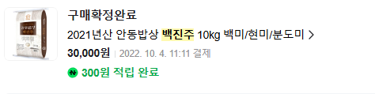
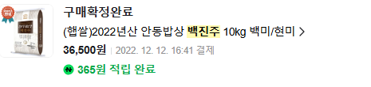
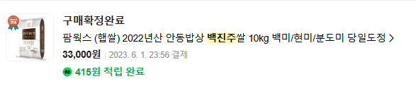
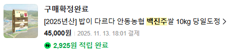
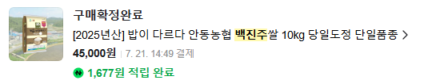
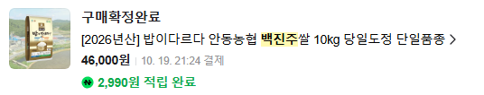

품종벼중 대중적인 1티어 쌀을 보면
1. 수향미(골드퀸3호) 누룽지향
2. 백진주미(안동농협게 품질관리되서 맛이 좋음) 꼬들한데 쫀득한 식감.
2가지가 있음
이거저거 시켜먹다가 22년도 부터 지금까지 4년동안 백진주미만 사먹는데.
구매이력을 보니 가격변화가 심상치 않음.
22년 가격. 3만원

10kg 기준 3만원, 일반 혼합미에 비해서 별로 부담안되는 가격.
23년 가격, 3.3~3.6만, 22년대비 10~20% 인상


잠깐 올랐다가 살짝 내려감.
24년 가격 4.5만원 22년대비 50% 1.5배 인상

슬슬 가격이 이상해지기 시작함. 22년 대비 1.5배 상승.
25년 가격 24년과 동일

많이 올라서 그런가 안정화됨
26년 가격 4.6만 작년대비 천원인상

결론
4년간 쌀값 약 50% 상승.
물론 일본은 22년대비 300%정도까지 가격이 올라갔다가 올해 200%로 내려옴.
고티어 쌀만 가격이 비싸졌나?
일반 혼합미 10kg 기준으로도 2만원 초반하던 쌀이 3만원 초반으로 50%쯤 올라감.
신동진미 3만원대로 많이 나오던데 그거 트라이해봐 맛있음